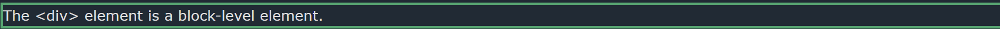
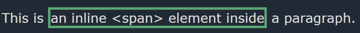
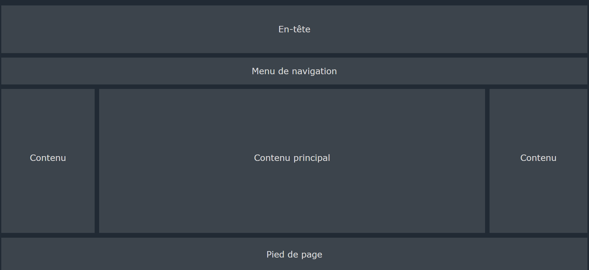

The display property is the most important CSS property for controlling layout
The display property is used to specify how an element is shown on a web page.
Every HTML element has a default display value, depending on what type of element it is. the default display value for most element is :
block or inline
A block-level element ALWAYS starts on a new line and takes up the full width available
Example of block-level
An inline element DOES NOT start on a new line and only takes up as much width as necessary
Example :
| Value | description |
|---|---|
| inline | Displays an element as an inline element |
| block | Displays an element as a block element |
| contents | Makes the container disappear, making the child elements children of the element the next level up in the DOM |
| flex | Displays an element as a block-level flex container |
| grid | Displays an element as a block-level grid container |
| inline-block | Displays an element as an inline-level block container. The element itself is formatted as an inline element, but you can apply height and width values |
| inline-flex | Displays an element as an inline-level flex container |
| inline-grid | Displays an element as an inline-level grid container |
| inline-table | The element is displayed as an inline-level table |
| list-item | Let the element behave like a |
| run-in | Displays an element as either block or inline, depending on context |
| table | Let the element behave like a <table> element |
| table-caption | Let the element behave like a <caption> element |
| table-column-group | Let the element behave like a <colgroup> element |
| table-header-group | Let the element behave like a <thead> element |
| table-footer-group | Let the element behave like a <tfoot> element |
| table-row-group | Let the element behave like a <tbody> element |
| table-cell | Let the element behave like a <td> element |
| table-column | Let the element behave like a <col> element |
| table-row | Let the element behave like a <tr>> element |
| none | The element is completely removed |
| initial | Sets this property to its default value |
| inherit | Inherits this property from its parent element |
display:none; is commonly used with JavaScript to hide and show elements without deleting and recreating them
As mentioned, every element has a default display value. However, you can override this.
Chancing an inline element to a block element, or vice versa, can be useful for making the page look a specific way, and still follow the web standards.
Hiding an element can be done by setting the display property to none. The element will be hidden, and the page will be displayed as if the element is not there:
visibility:hidden; also hides an element
However, the element will still take up the same space as before. The element will be hidden, but still affect the layout:
| Property | description |
|---|---|
| display | Specifies how an element should be displayed |
| visibility | Specifies whether or not an element should be visible |
Setting the width of a block-level element will prevent it from stretching out to the edges of its container.
Then, you can set the margins to auto, to horizontally center the element within its container. The element will take up the specified width, and the remaining space will be split equally between the two margins
Note: the problem with the <div> above occurs when the browser windows is smaller than the width of the element. The browser then adds a horizontal scrollbar to the page.
Using max-width instead, in this situation, will improve the browser's handling of small windows. this is important when making a site usable on small device:
The position property specifies the type of positioning method used for an element (static, relative, fixed, absolute or sticky)
The position property specifies the type of positioning method used for an element.
HTML elements are positioned static by default
Static positioned elements are not affected by the top, bottom, left and right properties
An element with position:static; is not positioned in any special way; it's always positioned according to the normal flow of the page
An element with position:relative; is positioned relative to its normal position
Setting the top, right, bottom, and left properties of a relatively-positioned element will cause it to be adjusted away from its normal position. Other content will not be adjusted to fit into any gap left by the element.
An element with position:fixed; is positioned relative to the viewport, which means it always stays in the same place even if the page is scrolled. The top, right, bottom, and left properties are used to position the element.
A fixed element does not leave a gap in the page where it would normally have been located
Notice the fixed element in the lower-right corner of the page. Here is the CSS that is used:
An element with position:absolute; is positioned relative to the nearest positioned ancestor
However; if an absolute positioned element has no positioned ancestors, it uses the document body, and moves along with page scrolling
An element with position:sticky; is positioned based on the user's scroll position.
A sticky element toggles between relative and fixed, depending on the scroll position. It is positioned relative until a given offset position is met in the viewport
The z-index property specifies the stack order of an element
When element are positioned, they can overlap other elements.
the z-index property specifies the stack order of an element (which element should be placed in front of, or behind, the others).
An element can have a positive or negative stack order.
The CSS overflow property controls what happens to content that is too big to fit into and area
The overflow Property specifies whether to clip the content or to add scrollbar when the content of an element is too big to fit in the specified area.
By default, the overflow is visible, meaning that it is not clipped and it renders outside the element's box
with the hidden value, the overflow is clipped, and the rest of the content is hidden:
Setting the value to scroll the overflow is clipped and a scrollbar is added to scroll inside the box
Note that this will add a scrollbar both horizontally and vertically (even if you do not need it)
The auto value is similar to scroll, but it adds scrollbars only when necessary
The overflow-x and overflow-y properties specifies whether to change the overflow of content just horizontally or vertically
overflow-x specifies what do to with the left/right edges of the content.
overflow-y specifies what do to with the top/bottom edges of content.
The CSS float property specifies how an element should float
The CSS clear property specifies what elements can float beside the cleared element and on which side
the float property is used for positioning and Formatting content e.g let an image float left to the text in a container
In its simplest use, the float property can be used to wrap text around images.
When we use the float property, and we want the next element below (not on right or left), we will have to use the clear property
The clear property specifies what should happen with the element that is next to a floating element
Compared to display: inline, the major difference is that display: inline-block allowto set a width and height on the element.
compared to display: block, the major difference is that display: inline-block does not add a line-break after the element so the element can sit next to other elements.
To horizontally center a block elements, use margin: auto.
To just center the text inside an element, use text-align: center
To center an image, set left and right margin to auto and make it into a block element:
One method for aligning elements is to use position:absolute; and right: 0px;
Another method for aligning elements is to use the float property
There are many ways to center an element vertically in CSS. A simple solution is to use top and bottom padding
To center both vertically and horizontally, use padding and text-align: center
Another trick is to use the line-height property with a value that is equal to the height property
If padding and line-height are not options, another solution is to use positioning and the transform property
You can also use flexbox to center things.
Un site web est souvent divisé en en-têtes, menus, contenu et pied de page :
Il existe une multitue de structure de mise en page différente. Cependant, la structure ci-dessus est l'une des plus courante.
Un en-tête est généralement situé en haut du site web (ou juste en dessous du menu de navigation principal). Il contient souvent un logo ou le nom du site web
Une barre de navigation contient une liste de liens pour aider les visiteurs à naviguer sur votre site Web
La présentation de cette section dépend souvent des utilisateurs ciblés. La présentation la plus courante est l'une des suivantes :
Le pied de page se trouve au bas de votre page. Il contient souvent des informations telles que les droits d'auteur et les coordonnée